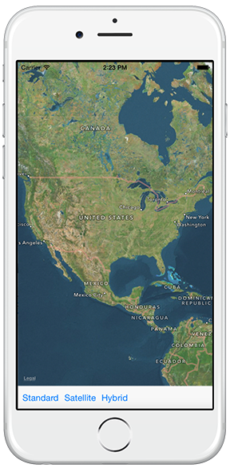
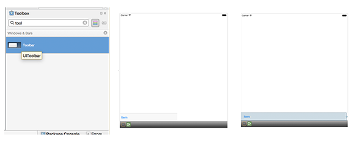
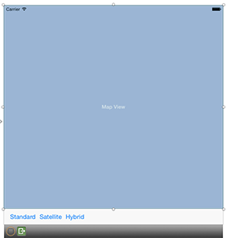
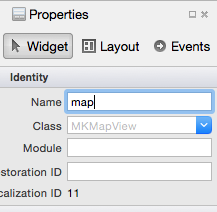
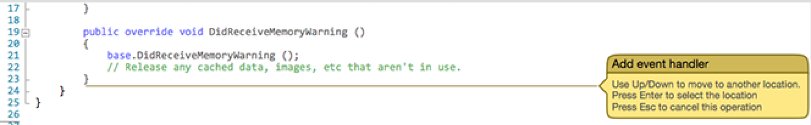

Duration
10 minutes
Goals
In this group exercise, we will explore adding a map to a new iOS application.
We will create a UI that includes a map and three buttons that will change the MapType dynamically.
The completed lab will look something like:

Required Assets
There is a Exercise 1 folder included with this lab exercise which contains a completed project if you'd like to compare your work.
Challenge
The high-level procedure is shown here. You can use this information to guide your implementation or use the step-by-step procedure given below.
- Create a new Single-View, Universal (iPhone+iPad) iOS solution.
- Add a
UIToolbarto the bottom of the view with three buttons as shown in the image above. - Add a
MKMapViewstretched over the remainder of the view. - Wire up event handlers for each button and change the
MapTypefor the mapView. - Turn on the map options to be able to interact with the map.
Steps
Create a new Solution and add a UIToolbar
- Using your IDE of choice, create a new Single-View, Universal iOS application that can run on both the iPhone and iPad.
- Open the Main.Storyboard file. Our goal is to create the following design:
- In the designer, drag a Toolbar from the Toolbox to the bottom of the screen; size it to stretch along the bottom of the view contoller. 
- Using the above image as a guide, add Constraints to the toolbar to dock it to the bottom of the screen. The Toolbar has an intrinsic height so you will only need to fix it's position by constraining the left, right and bottom of it to the corresponding edges of the view controller.

How do I add a constraint in the iOS Designer?


Add the map to your view
Next, let's add the map into the application.
- In the Main.Storyboard, use the ToolBox, locate the Map View, and drag it onto your view controller.
- Resize the Map to fill the remaining space in the view controller (above the toolbar); 
- Apply constraints bewtween the top, left, right and bottom edges of the map and the parent view controller.
- Select your map and name it "map" in the properties pane. 
Add Buttons to the Toolbar
We will use Toolbar buttons to change the type of map we are displaying. In this step, we will add those buttons into the UI.
- In the Toolbox, locate the Bar Button Item and drag two additional buttons onto the Toolbar.
-
Click on each button to edit the Name and Title in the Properties pane.
- Give each button a title that describes the three primary map types: Standard, Satellite and Hybrid.
- Name the buttons: btnStandard, btnSatellite, btnHybrid respectively.

Create event handlers for the buttons
We need to add event handlers for each of the buttons in our Toolbar.
-
In the designer, double-click on each of the buttons in the Toolbar.
This will automatically create the method in the ViewController.cs file.
Move the yellow event handler box where you want it and press enter to place it in the code.
Alternatively, using the names you assigned to the buttons, subscribe to each of the button's
ClickedEventHandlers programmatically.

- Once all three methods have been created, set the map type (standard, satellite, hybrid) for each of the buttons, use the code hint below as an example if you need a little guidance.
- Run your application in the simulator or on a device and use the buttons to change the map type.
Set mapping options
-
Open the Main.storyboard designer and select the
MKMapView. Under the Allows section in the property explorer, make sure all the the boxes are checked. Under the Shows section, make sure all the the boxes exceptUser Location are checked (we'll cover that one in the next lab).
-
Run the app again and try dragging the map with your finger (or mouse on the simulator). Try rotating the map, and then use two fingers to pinch-zoom the scale of the map.
- On the Simulator you can hold the OPTION key down to simulate two-fingers.
- Stop the app and uncheck some of the options and try to interact with the map again to see the effect of each one.

Summary
Congratulations! In this lab exercise, you created a custom UI capable of changing the map view using the MKMapView.